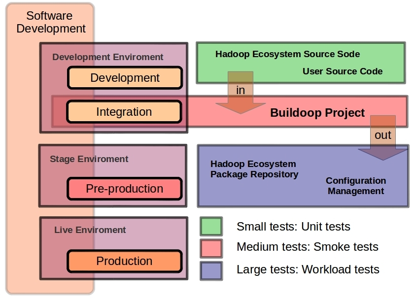

The Buildoop Project
Buildoop Project is an open source collaboration project that provides templates and tools to help you create custom Linux-based systems based on Hadoop ecosystem.
Buildoop Project is suitable for Big Data developers based on Hadoop
It’s suitable both for:
- System developers: hadoop ecosystem bits
- Application developers: Tools integrated with hadoop ecosystem.
You can use any Linux distribution as foundation (Centos 6.x, Ubuntu 12.04.x, …) and create add-ons with Buildoop to convert this distribution in a Hadoop Linux distribution.
Buildoop Project components
The Buildoop Project is splitted in the following parts:
- Buildoop engine: a make-like build command line tool.
- A set of metadata information with “buildoop recipes”. “buildoop recipes” specify how a particular package is built. It includes all the package dependencies, source code locations, configuration, compilation, build, install and remove instructions.
- An Integration Test Framework.
- A set of configuration tools for bare-metal deployments.
Buildoop Software Development life-cycle

Buildoop usage example
$ buildoop -targets
$ buildoop -boms
$ buildoop stable -info
$ buildoop stable -build
$ buildoop stable hadoop -info
$ buildoop stable hadoop -build